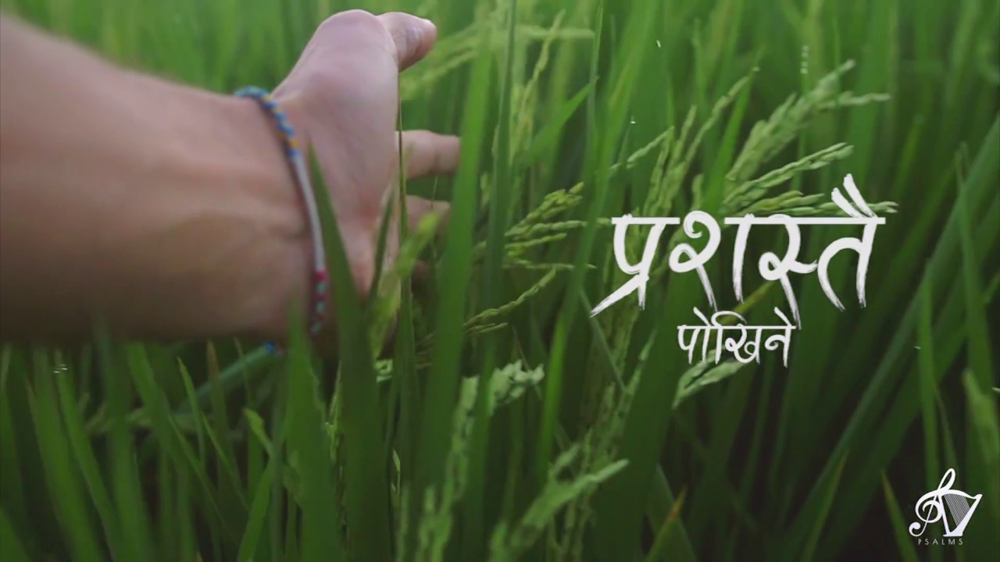

🎵 Closer to His Heart - ADRIAN DEWAN SONGS ❤️
This playlist features the soul-stirring worship songs of Adrian Dewan, a prominent voice in the
Nepali Christian music scene. His music carries a heartfelt devotion that resonates deeply with listeners
seeking spiritual intimacy and connection with God. Each song reflects a personal journey of faith—marked by
surrender, praise, and a longing to dwell in the presence of the Almighty. With a blend of acoustic melodies,
soft harmonies, and lyrical depth, Adrian Dewan captures both the simplicity and richness of true worship. His
voice gently invites you to lay down burdens, reflect on grace, and experience the peace and joy found only in
God.
Whether you're seeking quiet reflection, personal prayer time, or community worship, this playlist creates a
sacred atmosphere filled with humility, reverence, and spiritual upliftment. The songs speak of God's
faithfulness, unconditional love, and the daily walk of a believer. Adrian's music is not just a listening
experience—it's an invitation to encounter the divine, to rest at the feet of Jesus, and to grow deeper in
faith. Perfect for mornings of devotion or evenings of reflection, this playlist will bless your soul and help
you draw nearer to the heart of God.
Here are some of the songs of the playlist.
-
GHANISTA || Jaitun Chhaya || ADTS
“Ghanista” by Adrian Dewan is a heartfelt Nepali Christian worship anthem
expressing
deep
intimacy with Jesus. The singer praises giving up everything—treasures and even life—to know Christ
more
closely. Themes center on worship, surrender, and spiritual devotion: dwelling in Scripture's depth,
welcoming the Holy Spirit's light, and living to glorify Jesus. Through emotive melody and sincere
lyrics,
the song invites believers to draw near, embrace divine presence, and recognize worship as life's
true
purpose. Its poetic calls—“बच्चनको गहिराइमा तपाइलाई भेट्न… सबै थोक दिन म तयार छु”—emphasize
willingness
to
forsake all for spiritual communion.
-
Tapaiko Dwaarma || SSAJ

Tapaiko Dwaarma by Adrian Dewan is a gentle and reflective Nepali Christian worship
ballad
about approaching God's presence. Set to a soothing acoustic guitar, the lyrics invite believers to
come
to
His door—symbolizing access to intimacy with Jesus. The singer expresses longing, surrender, and
trust,
asking God to meet them in their need and accept their heart. Themes highlight God as refuge and
guide,
drawing the worshipper near through simple yet profound devotion. Popular in church gatherings and
acoustic
praise sets, this song gently encourages spiritual closeness, openness, and the warmth of divine
welcome.
-
PARAMPRABHU LE JUTAUNU HUNXA - ADRIAN DEWAN

Adrian Dewan offers a heartfelt ode to the Almighty who gathers His people (“Param
Prabhu
le
jutaunu hunxa”). The lyrics celebrate God's sacrificial love—He laid down His life for humanity's
sins—and
highlight His divine role in bringing believers together. Through worshipful melody and heartfelt
delivery,
the song reinforces themes of unity, grace, and spiritual belonging. Often performed in church
conferences
and live concerts, it resonates deeply within Nepal's Christian community, inspiring communal faith,
gratitude for salvation, and a reaffirmation of God's central presence in believers' lives.
-
Prashastai || Sophia/Adrian

Prashastai by Adrian Dewan (feat. Sophia Lama) is a tender Nepali Christian worship
ballad
celebrating the worthiness of God's praise. With melodic guitar and keyboard accompaniment, the song
glorifies God's mighty deeds, exalted character, and loving nature. Through its poetic lyrics and
serene
rhythm, it invites believers into heartfelt adoration, humility, and reverence. The chorus declares
God
as
“worthy of all praise,” reinforcing gratitude for salvation, grace, and divine presence. Popular in
church
gatherings, “Prashastai” strengthens communal worship, encouraging listeners to acknowledge God's
supremacy
and express devotion through sincere, uplifting praise.
-
'Yeshu Ko Chhatima' || ADRIAN DEWAN

Yeshu Ko Chhatima by Adrian Dewan is a beautiful and deeply emotional Nepali
Christian
worship song that explores the intimate relationship between the believer and Jesus. With heartfelt
lyrics,
it depicts Jesus' very heartbeat and gaze as more precious than life itself—bought through His
sacrificial
blood and eternal love. The song declares the church as Christ's bride, united in a deep,
unbreakable
bond
sealed by the cross.
Accompanied by gentle acoustic and traditional Nepali instruments like sarangi and bansuri, the
melody
invokes a sense of sacred presence. It invites listeners into profound worship, celebrating their
identity
in Christ and the transformative power of divine love—bringing hearts closer to the heart of Jesus.